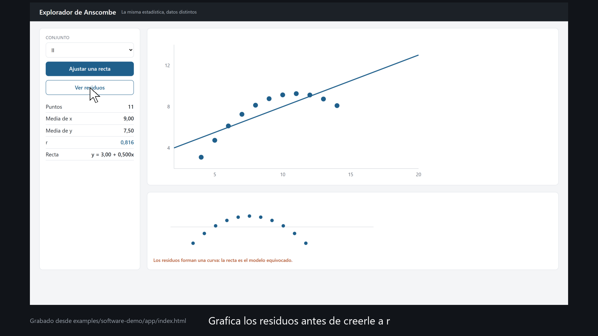

Una demostración grabada desde el panel real, no dibujada
presentation-kit · ejemplo de demostración de software · 2026

Grabado con «kit.py demo» desde app/index.html (demo.es.yml). Datos: Anscombe (1973), The American Statistician 27(1), 17–21.
mockup: true estampa «Maqueta» en cada cuadro.presentation-kit: engine/demo.py.